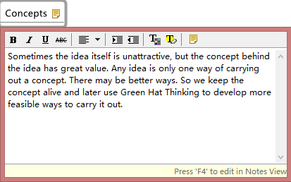
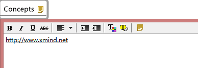
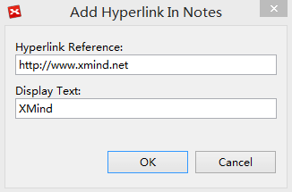
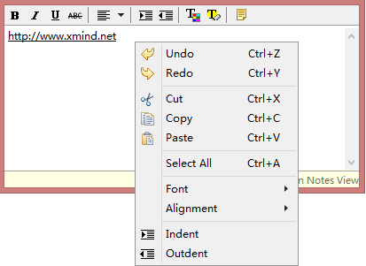

Notes
Rich text notes are used to annotate topics. You can easily create new note, and format it to record more details:
To Add notes to a topic:- Select a topic.
- Open the pop-out dialog with one of the following ways.
- Press 'F4'.
- Click notes icon on the toolbar.
- Right-click the mouse, select 'Notes'.
- Type your notes in the notes dialog.
- Click "Ctrl(Command)+Enter" to save notes and close the dialog.
Note: "Ctrl+Enter" is not available on Linux at present.

To Format existing notes:- Open the Pop-up notes dialog, and press "F4" again to open the Notes View.
- Use the notes toolbar to edit these attributes:
- Text font, size, type, alignment, color.
- Background color.
- Insert Images.
- Insert Hyperlink
- If you type the sentence like "http://www.xmind.net" in the notes, XMind will format it as a hyperlink automatically.



To Open the Hyperlink in the Notes- Open the notes view
- Press the Ctrl(Command on Mac) key, and click the link
Note: You can only insert local image into topic notes.
Show all notes in notes view- Open the notes view
- Click on the sheet and all notes of the map will be shown in the notes view